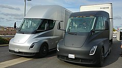
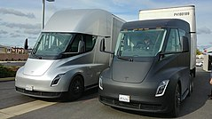

What is Electric Vehicle
An electric vehicle, also called an EV, uses one or more electric motors or traction motors for propulsion. An electric vehicle may be powered through a collector system by electricity from off-vehicle sources, or may be self-contained with a battery, solar panels or an electric generator to convert fuel to electricity. EVs include, but are not limited to, road and rail vehicles, surface and underwater vessels, electric aircraft and electric spacecraft.
EVs first came into existence in the mid-19th century, when electricity was among the preferred methods for motor vehicle propulsion, providing a level of comfort and ease of operation that could not be achieved by the gasoline cars of the time. Modern internal combustion engines have been the dominant propulsion method for motor vehicles for almost 100 years, but electric power has remained commonplace in other vehicle types, such as trains and smaller vehicles of all types.
History of Electric Vehicle
Electric motive power started in 1827, when Hungarian priest Ányos Jedlik built the first crude but viable electric motor, provided with stator, rotor and commutator, and the year after he used it to power a tiny car.
A few years later, in 1835, professor Sibrandus Stratingh of the University of Groningen, the Netherlands, built a small-scale electric car, and between 1832 and 1839 (the exact year is uncertain), Robert Anderson of Scotland invented the first crude electric carriage, powered by non-rechargeable primary cells.
Around the same period, early experimental electrical cars were moving on rails, too. American blacksmith and inventor Thomas Davenport built a toy electric locomotive, powered by a primitive electric motor, in 1835. In 1838, a Scotsman named Robert Davidson built an electric locomotive that attained a speed of four miles per hour (6 km/h). In England a patent was granted in 1840 for the use of rails as conductors of electric current, and similar American patents were issued to Lilley and Colten in 1847.
 
